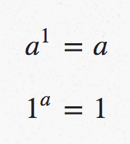
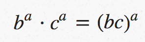
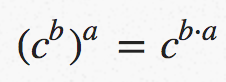

我在2012年11月的London Haskell上做了关于这个主题的演讲。演讲的视频在YouTube上，幻灯片在GitHub上。
在这一系列文章中，我将解释为什么Haskell的数据类型被称为代数-而不提及範疇理论或高级数学。
您在高中学习的代数以数字(例如1、2、3...)和运算符(例如加法和乘法)开始。运算符为您提供了一种组合数字并从中生成新数字的方法。例如，将1和2与加法运算相结合会得出另一个数字3, 我们通常表示为:1
1 + 2 = 3
当你年纪稍大时，你会初次了解一些变量(例如x，y，z...)，这些变量可以代表数字。
更进一步，你会学到代数所遵循的laws(法律/定律/法則)。比如:1
20 + x = x
1 ⋅ x = x
它适用于x的所有值。还有其他laws(法律)，它们定义数字或运算的性质。
当数学家谈论代数时，他们指的是比这个更一般的东西。数学代数包括三个部分:
- Objects (对象)是代数的
things(事物/東西)。对象集合定义了我们所讨论的内容。 - Operations (操作)为我们提供了将旧事物组合成新事物的方法。
- Laws (法律)是对象与操作之间的关系。
在高中代数中，对象是数字，运算是加法、乘法和friends(朋友/友元)。
Haskell类型的代数
在Haskell类型的代数中，objects(对象)是类型，例如Bool和Int。
Operations(操作)根据已经存在的类型并从中生成新的类型。一个例子是类型构造函数Maybe。它本身不是类型(类型构造子)，但您可以使用它来创建类型，例如类型可能是Maybe Bool和Maybe Int。另一个示例是Either，它从两个旧类型创建了一个新类型, 例如Either Int Bool。
counting(计数)
通过计算类型可能具有的值，可以看到与更熟悉的数字代数之間的联系。以Bool为例:1
data Bool = False | True
Bool类型的对象可以有两个值，一个是False，另一个是True(从技术上讲，它也可以是undefined)，在后面的文章中我将忽略这一事实。
粗略地说，Bool类型对应于数字代数中的数字2.
如果Bool是2，那么1是什么？它应该是只有一个值的类型。
在计算机科学文献中，这种类型通常称为Unit(单位)，并定义为:1
data Unit = Unit
在Haskell中，已经有一个只有一个值的类型–称为()(读作’单位’)。
您不能自己定义它，但是如果可以定义的话:1
data () = ()
使用这个计数法类比，Int对应于数字$2^32$(2的32次方)，因为这是Int类型的值的数量(至少它在我的机器上是這樣).
加法
原则上，我们可以键入与3、4、5等相对应的类型。有时我们可能确实需要这样做, 例如，对应于7的类型对于编码星期几很有用。但是，如果我们能够从旧的基础上构建新的类型，那就更好了。这就是代数operators(运算符)的用武之地。
对应于加法的类型是:1
data Add a b = AddL a | AddR b
也就是说，类型a + b是tagged union(标记的并集)，持有a或b。要了解为什么这与加法相对应，我们可以重新考虑计数法。假设a为Bool，b为()，因此a有2个值，b有1个值。那麼Add Bool ()类型有多少個值？我们可以列出它们:1
addValues = [AddL False, AddL True, AddR ()]
有三个值，即3 = 2 + 1。这通常称为sum类型。在Haskell中，sum类型通常称为Either，定义为:1
data Either a b = Left a | Right b
但我会坚持使用Add.
乘法
对应于乘法的类型是:1
data Mul a b = Mul a b
也就是说，类型a · b是既包含a又包含b的容器.
计数法证明了其与乘法的对应关系-如果我们将a和b都設置为Bool，则Mul Bool Bool类型的可能值为:1
mulValues = [Mul False False, Mul False True, Mul True False, Mul True True]
有四个值，即4 = 2 x 2。这通常称为product类型。在Haskell中，product是pair(成對)类型:1
data (,) a b = (a, b)
但我会坚持使用Mul.
零
使用加法和乘法，我们可以生成对应于从1到所有数字的类型-但是0呢？那将是一个没有值的类型。听起来很奇怪，但是您可以定义这样的类型:1
data Void
请注意，数据定义中没有构造函数，因此您永远无法构造Void类型的值–它有零個值，正是我们想要的！
Haskell类型代数中的定律
我们刚刚定义的类型有哪些定律？就像在数字代数中一样，定律将断言两个objects(对象)的相等性-在我们的情况下，objects(对象)指类型。
但是，当谈到equality(相等性)时，我并不是指Haskell中(==)函數意义上的平等。
相反，我的意思是說两种类型是一一对应的，也就是说，当我说两种类型a和b相等时，我的意思是您可以编写两个函数:1
2from :: a -> b
to :: b -> a
将a的值与b的值配对，因此下面的等式总是成立的(这里的==是真正的haskell风格的相等):1
2to (from a) == a
from (to b) == b
例如，我认为类型Bool和Add () ()是等效的。我可以通过以下函数演示相等性:1
2
3
4
5
6
7to :: Bool -> Add () ()
to False = AddL ()
to True = AddR ()
from :: Add () () -> Bool
from (AddL _) = False
from (AddR _) = True
我将使用三重相等符号===来表示类型之间的这种相等性。
sum类型定律(和)
以下是两个补充法则:1
Add Void a === a
表示Add Void a类型的值与a类型的值一样多。1
Add a b === Add b a
表示add顺序并不重要。在数字代数中，您可能更熟悉这些定律:1
20 + x = x
x + y = y + x
如果您喜欢练习，则可以在Haskell代数中证明定律的正确性-可以使用计数法，也可以编写函数from和to.
product类型定律(乘积)
有三个有用的乘法法则:1
Mul Void a === Void
也就是说，如果您将任何东西乘以Void，將会得到Void，1
Mul () a === a
表示如果您乘以()，则不会有任何改变.1
Mul a b === Mul b a
表示乘的顺序無關緊要。这些定律的更常见形式是:1
2
30 ⋅ x = 0
1 ⋅ x = x
x ⋅ y = y ⋅ x
另外两个练习:
- 在Haskell代数中证明这些定律的合法性
- 解释为什么我们不需要以下形式的定律
1
2Mul a Void === Void
Mul a () === a
还有一条定律将加法和乘法运算符联系起来:1
Mul a (Add b c) === Add (Mul a b) (Mul a c)
这一个比较难理解，但是编写相应的from和to函数并不太难。
这个法则的算术版本看起来更友好,称为分配律:1
a ⋅ ( b + c ) = a ⋅ b + a ⋅ c
函數类型
在Haskell中，除了Int和Bool这样的具体类型之外，还有Int - >Bool或Double -> String这样的函数类型，这些是如何融入代数的？
为了弄清楚这一点，我们可以回到计数法。
有多少a -> b类型的函數？
具体来说，将a和b都設置为Bool。
則值False可以映射为False或True，对于值True是同样的，因此有$2^2$(2的2次方)个可能的Bool-> Bool函数。
实际上，我们可以列举一下它们:1
2
3
4
5
6
7
8
9
10
11
12
13f1 :: Bool -> Bool -- equivalent to 'id'
f1 True = True
f1 False = False
f2 :: Bool -> Bool -- equivalent to 'const False'
f2 _ = False
f3 :: Bool -> Bool -- equivalent to 'const True'
f3 _ = True
f4 :: Bool -> Bool -- equivalent to 'not'
f4 True = False
f4 False = True
如果b仍然是Bool(具有两个值)并且a是具有三个值的类型，那会发生什么？1
data Trio = First | Second | Third
然后，First、Second和Third中的每一個都可以映射到两个可能的值，总共有$2^3$(2的3次方)个类型为Trio -> Bool的函数。
同样的论点在一般情况下也成立。如果有A类型的值，B类型的值，则A -> B类型的值的数目为: $B^A$(B的A次方)
这证明了函数类型的常用术语为指数类型的.
函數类型定律
涉及unit(单元)类型的函数类型有两条定律, 他们是:1
() -> a === a
表示函数() -> a的数量与类型a的值一样多.1
a -> () === ()
表示只有一个a -> ()函數, 特别的。它就是: const (). 这些定律的算术形式是:

还有一条法律允许从共同参数中提取因式分解:1
(a -> b, a -> c) === a -> (b,c)
其算术形式为:

有关返回其他函數的函數的法律:1
a -> (b -> c) === (b,a) -> c
其算术形式为:

切换右侧部分的变量顺序，同时删除左侧的括号后，最后一个定律可能更熟悉:1
a -> b -> c === (a,b) -> c
也就是说，我们可以使用curry和uncurry函数。同样，通过编写相应的to和from函数来证明所有这些定律也是一个有趣的练习。
下一篇
在下一篇文章中，我将研究递归类型，例如列表和二叉树，并展示如何以各种方式滥用类型的代数来推断有关类型的有趣事实。